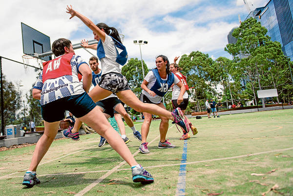

We also provide the news from asia, so if you want to know easier about asean news you just need to go to the asean news, and don't need troublesome to see the new of the asean news every day
ASEAN GAMES Has ended with successfully fhiliphines President give speech up to the another country and say thanks for the support asean games.
Wanna go to the Asean News Page?
Go back to the home page ~

World News
World news or international news or even foreign coverage is the news media jargon for news from abroad, about a country or a global subject. For journalism, it is a branch that deals with news either sent by foreign correspondents or news agencies, or – more recently – information that is gathered or researched through distance communication technologies, such as telephone, satellite TV or the internet.
Although in most of the English-speaking world this field is not usually regarded as a specific specialization for journalists, it is so in nearly all the world. Particularly in the United States, there is a blurred distinction between world news and "national" news when they include directly the national government or national institutions, such as wars in which the US are involved or summits of multilateral organizations in which the US are a member.
At the birth of modern journalism, most news were foreign, as registered by the courants of the 17th century in West and Central Europe, such as the Daily Courant (England), the Nieuwe Tijudinger (Antwerp), the Relation (Strasbourg), the Avisa Relation oder Zeitung (Wolfenbüttel) and the Courante Uyt Italien, Duytsland & C. (Amsterdam). Since these papers were aimed at bankers and merchants, they brought mostly news from other markets, which usually meant other nations. In any case, it is worthy to remark that nation-states were still incipient in 17th-century Europe.
From the 19th century on, with newspapers already established in Europe, the United States and a few other countries, innovations in telecommunications such as the telegraph made news from abroad easier to be spread. The first news agencies were then founded, like AFP (France), Reuters (UK), Wolff (currently DPA, Germany) and the AP (US).
War journalism is one of the best known subfields of world news (although war coverage can be national for the media of belligerent countries themselves).
What we do
Provide the Politic News in the world
And also give the detail information about the another news, which are :
1. Sports
Volley,Basket,Football & Life Healthy,
2. Fashion
Clothes,Trend,Hybeast
3. Traveling
Out Country,Destination,Culture
OUR PARTNER POLITIC NEWS UPDATE
Wikipedia
Provide you the news world update. wikipedia also provide the meaning of word that maybe you can't understand or don't know

Twiter user will share the news politic from our sites to the twitter so you can check your twitter
POLITIC NEWS (Copyright @2020)